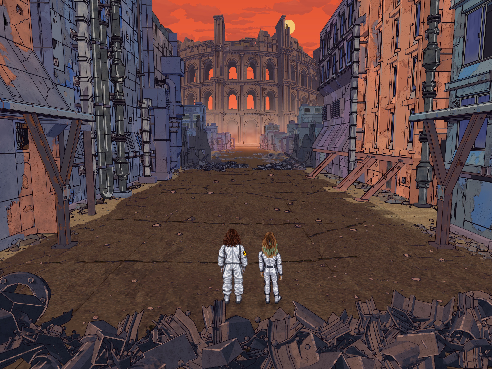

<!doctype html>
<!-- SPDX-FileCopyrightText: 2026 John Hurliman and contributors
SPDX-License-Identifier: GPL-3.0-or-later
Displayed artwork is CC-BY-SA-4.0; see ../../LICENSE. -->
<html lang="en"><meta charset="utf-8"><meta name="viewport" content="width=device-width,initial-scale=1">
<title>Transmissions from Alpha Centauri · v1.0</title>
<style>body{margin:0;background:#17171c;color:#dedee7;font:15px system-ui}header{padding:18px 24px;display:flex;justify-content:space-between;gap:24px}h1{font-size:17px;margin:0;font-weight:550}p{margin:5px 0 0;color:#a9a9bb}a{color:#b9caff}img{display:block;width:100%;height:auto}main{max-width:1920px;margin:auto}</style>
<header><div><h1>Transmissions from Alpha Centauri · v1.0</h1><p>Approved September 21, 2026 · 3840 × 2885</p></div><a href="main-4k.png">Full-resolution image</a></header>
<main></main>
</html>
